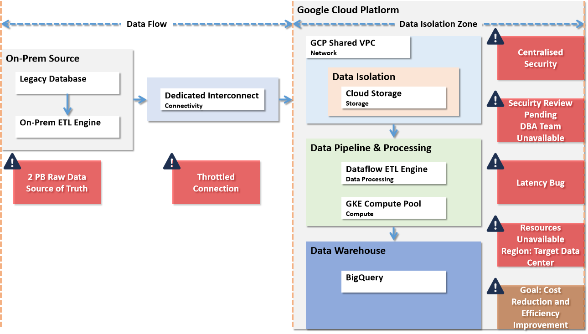

1. 问题对齐 — 卡点在哪里
数据从 On-Prem 经 Dedicated Interconnect 进入 GCP，红色标注为当前卡点。

2. 加速步骤 — 排除卡点的推进方法
对每个卡点，统一用五步闭环推进 — 从现象到落地，不跳步、不空转。
步骤一
什么事情
明确现象和影响范围 — 不是模糊感觉，而是可观测的症状和数据
步骤二
和谁相关
定位涉及的团队、系统和决策人 — 对应 RACI 矩阵的 R 和 A
步骤三
怀疑什么
形成假设 — 列出可能的根因，按概率和影响排序，不发散
步骤四
怎么排查
设计验证实验 — 用最小成本确认或排除假设，Day 1 就能动手
步骤五
如何解决
评估优先级，制定执行计划 — 明确产出物、负责人和完成时间，进入时间线跟踪
3. 初步判断 — 两条链路的依赖与优先级
★ Production Go-Live ★两条链路全部完成方可上线
P0-长线 不可压缩的硬约束，Go-Live 双重瓶颈
P0-短线 技术不确定性高，需立即诊断
P1-快赢 低成本快速见效，提振信心
P1-后台 后台采集数据，后期主动推进
P1-协调 需跨团队拉齐人员和资源
P1-触发 Day 1 提交申请，等外部响应
P1-短线 产出直接喂给 P0 上游
4. 业务影响 — 延后的代价是什么
当前阻塞项对客户业务层面的六大影响维度 — 拖延越久影响面越大。
按时上线
当前停滞危及已承诺的上线窗口及与终端客户相关的合同里程碑。
营收影响
服务体验
高 P95 延迟和错误率直接损害用户满意度，增加用户流失和品牌声誉风险。
SLA 违约风险
运维韧性
频繁的人工干预和高 MTTR 使运维团队无法转入稳态支持模式。
团队过劳风险
数据合规
策略执行和访问控制不完整，可能使组织面临监管审计发现的风险。
审计不通过风险
成本控制
低效的资源使用（通过超配掩盖延迟问题）正在推高运行成本，却未产出交付价值。
预算超支
团队产能
长期"战时状态"消耗工程团队产能，挤占新功能开发资源，拖延产品路线图。
路线图延误
5. 责任矩阵 — 谁推动哪件事
每行一个 Blocker，列按组织层级排列：客户决策层 → 客户六大团队 → Google → 合作伙伴。
R Responsible 负责执行
A Accountable 最终问责
C Consulted 需咨询
I Informed 需知会
- VP of Operations 是两个非技术瓶颈的决策者 — #3 安全审批最终签字 + #8 变更管理授权与旧系统关停
- Head of Cloud Delivery 承担 6 项 A — 技术类 Blocker (#1-#2, #4-#7) 的最终问责人
- 研发 + 数据 + 算法 是 #5 Pipeline 的主力 — 三个团队协同诊断代码、数据流和处理逻辑
- 运维承担 #1 网络 + #2 安全配置 + #6 资源 — 基础设施类 Blocker 的核心执行方
- 安全团队在 #3 承担唯一客户侧 R — 审批执行权在安全团队手中，其余 Blocker 以 C/I 协同
- Outcome CE 全线 R — 每个 Blocker 的诊断框架和执行指导
- SI / ISV 在 #4 和 #5 提供关键支持 — DBA 替补 + Pipeline 代码修改
6. 根因假设 — 为什么停滞？两个方向的调查假设
项目停滞的根因不一定是单一维度。我们从技术和组织两个方向建立假设，逐一验证排除，避免"只修技术却忽略人和流程"。
H1 · 技术与基建
硬件、网络、平台配置等技术层面的问题阻碍了系统正常运行——系统"跑不起来"。
应用代码效率不足——未针对云环境优化，存在性能热点和资源浪费。
云架构设计未调优——资源配置、查询模式、计费模式未匹配实际负载特征。
H2 · 组织与流程
技术之外的组织障碍——审批流程卡住、关键角色缺位、用户未迁移，系统"能跑但不让跑、没人用"。
系统可用后用户仍未迁移——培训不足、变更管理缺失、业务流程未适配。
7. 发现框架 — 从表象到根因的诊断路径
停滞的表象（延迟高、吞吐低）不等于根因。我们通过技术诊断和流程诊断双线并行，穿透表象定位真正的阻塞原因，避免"头痛医头"。
技术诊断 — 用数据定位瓶颈
- 网络层 — 端到端吞吐量测试、逐跳延迟分解、MTU/BGP 配置检查，区分运营商限速 vs GCP 入口瓶颈
- 安全层 — Org Policy 全量扫描、VPC-SC 审计日志分析、IAM 权限 Gap 分析、合规报告生成
- 计算层 — Pipeline Job Profiling（stage 级耗时、data skew）、Cloud Trace 端到端延迟分解、代码级热点分析
- 存储层 — BigQuery INFORMATION_SCHEMA 分析 top 高耗查询、分区/聚簇配置审查、Slot 利用率趋势
- 资源层 — Quota 使用率检查、目标机型可用性测试、GKE Autoscaler 配置审计、容量需求反推测算
- 数据层 — Schema 映射完整度检查、数据类型转换规则确认、自动化验证脚本可行性评估
诊断产出物
#1 Network Performance Baseline Report
#2 Security Controls Audit Report
#5 Pipeline Performance Diagnostic Report
#6 Region & Capacity Assessment Report
#7 BigQuery Cost Optimization Assessment
流程诊断 — 找到人和流程的卡点
- 审批流程 — 安全审批标准是否清晰？Reviewer 是否到位？团队是否具备 GCP 审计能力？
- 人员调配 — DBA 团队汇报线确认、当前负载评估、VP 级跨部门协调路径
- 供应商协同 — 运营商合同条款确认、带宽升级变更审批周期、Google TAM 容量预留
- 变更管理 — 有无正式 Cutover Plan？旧系统关闭时间表？管理层切换指令？
- 用户就绪 — 培训完成率、用户访谈（活跃 vs 非活跃）、业务流程新旧映射、Change Champion 识别
- 代码治理 — Pipeline 代码维护责任人、Code Review 机制、团队 Dataflow 经验评估
诊断产出物
#3 Security Review Readiness Assessment
#4 DBA Engagement & Data Validation Plan
#8 Adoption Gap Report & User Readiness Score
8. 严重等级 — 按紧急程度、推进难度、时间跨度、依赖强度进行评估
从紧急程度、推进难度、时间跨度、依赖强度等关键维度评估优先级 — 确保最紧急的先动、最难的早投资源、最长的不被低估、牵连最广的先突破。
P0-长线 不可压缩的硬约束，Go-Live 双重瓶颈
P0-触发 Day 1 提交申请，外部审批不可压缩
P0-短线 技术不确定性高，需立即诊断
P1-快赢 低成本快速见效，提振信心
P1-后台 后台采集数据，后期主动推进
P1-协调 需跨团队拉齐人员和资源
P1-短线 产出直接喂给 P0 上游
9. 并行链路 — 同步推进，阶段性依赖，割接前全线收敛
排序：与严重等级一致（#3→#1→#6→#5→#7→#8→#4→#2）— 最紧急的在最上方，便于识别整体压缩空间和资源投入优先级。
更新：本图随项目进展动态更新，每周对照实际进度与基线计划，识别偏差并调整后续节奏。
- 带宽瓶颈 2PB ÷ (10Gbps ÷ 8) ≈ 19 天（线速理论值）；有效利用率 70% 则 ≈ 26 天（~4 周）— 不可压缩的物理瓶颈，压缩 #1 前半段（运营商响应+扩容）可让传输更早启动，是释放整体时间线的关键杠杆
- 阶段依赖 #4/#5/#6/#7 全量验证必须等 #1 2PB 迁移完成（W10+）— 子集数据可先行修复调优和验证，但最终性能基线、成本基线和数据一致性需要全量数据
- 审批链依赖 #2 配置修复完成后材料移交 #3— #2 是审批链的前置输入，#2 越早完成，#3 审批材料越完整
- 关键洞察 任何单链完成 ≠ 可上线 — Go-Live = 所有链中最后完成的那条；#1 数据到位、#5 性能达标、#3 Clearance 获得，三者缺一不可
- 双重约束 #3 审批（日历不可压缩）+ #1 传输（物理不可压缩）是 Go-Live 的双重硬约束— #3 Day 1 提交，后续增量补充；#1 压缩前半段，尽早打开传输窗口
外部等待
依赖等待
前置依赖
10. 链路压缩 — 40G 带宽下数据传输缩短 3 周，割接提前至 W9
对比：同一项目仅改变带宽假设（10G → 40G），其余资源和工作项完全不变。拖拽验证约束传播后的压缩效果。
- 带宽提升 2PB ÷ (40Gbps ÷ 8 × 0.7) ≈ 6.6 天（~1 周）vs 10G 的 ~4 周，物理传输窗口缩短 3 周
- 等待消除 #4 DBA 等待完全消除— 子集验证（4 周）自然覆盖传输窗口，无需额外等待
- 等待压缩 #5/#7/#6 等待窗口从 3-5 周缩短至 1-2 周— 下游团队空转时间大幅减少
- 关键差异 割接 W12 → W9，节省 3 周— 带宽是唯一变量，其余工作项时长不变；成本增量需与 3 周加速价值对比
外部等待
依赖等待
前置依赖
11. 持续交付 — 四个阶段，逐步收敛
每个阶段有明确的交付物和退出标准 — 前一阶段产出是后一阶段的输入，不跳阶段、不留尾巴。
阶段一 · W1-2
启动诊断
- #2 Gap 扫描完成，安全配置修复启动
- #3 安全审批材料首版提交
- #1 网络诊断报告产出，运营商工单提交
- #6 Quota 诊断完成，扩容申请提交
- #5 子集数据 profiling 报告产出
- #7 子集 SQL 诊断报告 + INFORMATION_SCHEMA 分析
- #4 Schema 审查完成，VP 协调启动
- #8 Usage analytics 埋点部署，Baseline 数据开始采集
退出标准：所有链 Day 1 动作完成，外部申请全部提交
阶段二 · W3-5
子集攻坚
- #2 安全配置修复完成 → 全部材料移交 #3
- #5 子集 Pipeline 修复调优完成，性能基线建立
- #7 子集 SQL 优化方案落地，成本改善量化
- #4 DBA 到位（VP 协调完成），数据验证框架就绪
- #1 运营商响应 + 带宽扩容完成，2PB 传输启动
- #6 Quota 审批进行中
- #8 Baseline 数据积累，用户访谈方案设计
退出标准：#2 修复完成移交 #3；#5 子集性能基线建立；#4 DBA 到位；2PB 传输已启动
阶段三 · W5-9
数据迁移
- #1 2PB 数据传输持续推进（10G ≈ 4 周不可压缩）
- #4 数据验证执行，Schema 校验 + 一致性比对完成
- #6 Quota 审批通过，资源扩容实施完成
- #8 用户访谈 + Gap 分析完成，采用加速方案制定
- #3 安全审批持续等待中（日历不可压缩）
- #5 等待全量数据到位，持续优化子集调优成果
- #7 等待全量数据到位，优化规则固化为自动化脚本
退出标准：#1 2PB 传输完成；#4 数据验证完成；#6 扩容实施完成；#8 采用加速方案就绪
阶段四 · W10-12
全量收敛
- #5 全量 Pipeline 性能验证通过，达到 SLA 目标
- #7 全量 BigQuery 成本验证通过，运行成本达标
- #3 安全审批 Clearance 获得
- #4 全量数据一致性最终确认
- #8 采用加速执行，用户切换方案落地
- 全链路端到端冒烟测试通过
- 割接方案评审 + 回滚预案确认
- 完成割接上线
退出标准：#3 Clearance 获得；#5/#7 全量验证通过；全部 Blocker 关闭；割接完成，生产环境运行
12. 爬坡节奏 — 10G vs 40G 用量走势对比
数据域逐批迁移 + 逐批规模化测试 — 不等全部传输完成就启动验证，每完成一个数据域即可并行测试。带宽差异决定了数据到位节奏，进而决定用量爬坡速度。
10G 带宽 — W4 起传输，2PB ≈ 4 周
40G 带宽 — W4 起传输，2PB ≈ 1 周
目标产能 100%
10G 场景
域间隔 ~5天，D5 在 W7.8 到位，W8.5 才达 100% 全量负载。割接前仅 ≈ 3.5 周全量运行窗口
40G 场景
域间隔 ~1.3天，D5 在 W5 到位，W5.5 即达 100% 全量负载。割接可提前 ≈ 3 周
核心差异
40G 比 10G 提前 ≈ 3 周达到 100% 全量负载。每个域到位即有团队并行测试，所有域全量测试 = 系统已跑满目标产能
13. 风险管控 — 治理机制、报告节奏与首要风险
确保加速计划不只是"写在纸上" — 通过治理结构、报告节奏和升级路径，让偏差在发生当周被发现、被决策、被纠正。
治理结构
- 每日 War Room（按需） — 仅多条链路同时停滞时启动，常态下不开，让团队聚焦执行
- 周度 Steering Meeting — Outcome CE + Customer PM + 各链 Owner，30 min，每周一固定
- 双周 Executive Review — VP of Operations + Head of Cloud Delivery + Outcome CE，15 min，聚焦 Red/Amber 项
- 即时升级 — 任何链出现 ≥1 周偏差立即触发 Escalation，不等周会
- 决策权限 — 技术决策由 Head of Cloud Delivery 拍板；资源/预算/人员调配由 VP of Operations 拍板
报告节奏
- Weekly Status Report — 8 条链 RAG 状态（Red/Amber/Green）+ 本周动作 + 下周计划
- Gantt 基线对照 — 每周更新实际进度 vs 基线计划，识别偏差天数
- Blocker Burndown — 跟踪已关闭 / 进行中 / 未启动的 Blocker 数量趋势
- Risk Register — 每周更新风险清单，新增/升级/关闭记录存档
升级路径
- Green — 按计划推进，周报记录即可
- Amber — 出现偏差但可自行纠正，周会重点讨论，Owner 承诺修正日期
- Red — 偏差 ≥1 周或外部阻塞，立即升级至 Executive Review，48h 内产出决策
- Black — Go-Live 时间线受威胁，触发 War Room 模式，每日站会直至恢复
⚠ 首要风险 — 经分析识别的三个最高风险卡点
#3 Security Review
风险等级：高
原因：客户内部安全团队审批，但标准可能不清晰、团队缺乏 GCP 审计经验、甚至可能无人被指定为 Reviewer；审批日历不可压缩，且是 Go-Live 硬门槛，任何技术链完成都无法绕过此关
缓解：Day 1 提交材料抢占排期；必要时运行 Security Workshop 帮安全团队建立 GCP 审批能力；#2 修复完成后立即补充材料，减少补充轮次
#1 Interconnect
风险等级：高
原因：2PB 物理传输 ≈ 4 周不可压缩；运营商响应和扩容时间不可控；传输完成时间直接决定 #5/#7 全量验证的启动时间
缓解：压缩前半段（Day 1 诊断 + 尽早提交运营商工单），让传输窗口尽早打开
#5 Pipeline Latency
风险等级：高
原因：子集可先行修复，但全量验证必须等 #1 2PB 数据到位；链路跨度 12 周且尾部无缓冲；性能问题根因可能在全量数据下才暴露
缓解：子集阶段尽早建立性能基线和自动化回归测试，全量数据到位后快速切入验证
14. 启动大会 — 各方角色与协同机制
启动大会的核心目标：让每个人看到全局、找到自己的位置、理解第一周要做什么。
客户团队
Operations / Infra
#1 网络 · #2 安全 · #6 资源
Data Team / DBA
#4 Schema · #7 BigQuery
R&D Team
#5 Pipeline 代码
Security / Compliance
#3 审批执行
Change Mgmt Lead
#8 用户采用
协调核心
VP of Operations
预算 · 安全终签 · Legacy 退役
Head of Cloud Delivery
A × 6 · 技术决策权
Project Manager
状态跟踪 · 会议协调
Google Outcome CER × 8 链路 · 全线协同
#1
#2
#3
#4
#5
#6
#7
#8
谷歌团队
Google TAM
账号管理 · 容量预留 · SLA
Google Specialist CE — Security
安全 Workshop · 合规映射
Google Specialist CE — Infra
Dataflow · GKE · BigQuery
Google Pre-sales CE
原始架构设计上下文
Google Support
产品级技术支持
合作伙伴 — Outcome CE 紧密协作，全力保障
SI / ISV
#4 DBA 补位 · #5 Pipeline 代码
运营商
#1 专线带宽交付
Google Outcome CE 的核心职责
全线协同 — 唯一在全部 8 条链路中承担 R（Responsible）的角色，对每个 Blocker 提供诊断框架和执行指导
连接赋能 — 协同 Google 技术资源、SI/ISV 和运营商，共同支撑 Customer 执行团队和决策层
节奏驱动 — 组织周度 Steering Meeting + 双周 Executive Review，确保偏差在当周被发现和决策
辅助决策 — A（Accountable）在客户侧的 VP 和 Head of Cloud Delivery 手中；Outcome CE 提供全局视野和建议，不替客户做决定
15. 即刻行动 — 首日行动清单
Day 1 = 发令枪。所有链路同时启动，每个角色有明确的首日交付物。不等、不拖、不商量优先级 — 全部并行。首日锚定基线，周度 Steering 持续校准交付节奏。
VP of Operations
#3
#4
#8
- 签署 DBA 跨部门协调授权，确保 #4 人员 48h 内到位
- 确认安全审批 Reviewer 指定，推动 #3 排期
- 发布迁移优先级指令，明确全量上线和 Legacy 退役目标
Head of Cloud Delivery
#1
#6
- 确认 8 条链路 Owner 指定，每条链有且仅有一个负责人
- 审批 Interconnect 扩容方案（10G vs 40G 决策）
- 确认 Region 选择决策权限和备选方案
- Pipeline profiling — 抓取 Dataflow job metrics，识别 top 5 慢 stage
- 定位热点：serialization、shuffle、I/O wait、内存溢出
Project Manager
#1
#2
#3
#4
#5
#6
#7
#8
- 建立 Blocker 跟踪看板（8 条链 × RAG 状态）
- 安排首次 Steering Meeting 日历（周一 30min 固定）
- 确认 Executive Review 双周节奏并发送日历邀请
- 完成 Schema 差异对照（Legacy → GCP 字段映射）
- 启动子集数据验证脚本（抽样比对 + 一致性校验）
Google Outcome CE
#1
#2
#3
#4
#5
#6
#7
#8
- 启动全部 8 条链路诊断，确认每条链的 Day 1 Action Owner
- 组织首次 Steering Meeting（30 min），对齐目标和时间线
- 协调 Google 侧资源到位（TAM / Specialist CE / Support）
- 建立 Blocker 跟踪看板，定义 RAG 状态基线
- 明确审批标准：GCP workload 审批 checklist 是否存在？
- 确认所需证据清单：架构图 / 合规报告 / IAM / 加密 / 日志
- 确认 Reviewer 指定：谁负责审批？审批周期预期？
- 提交 Quota 加急申请，走内部加速通道
- 确认容量预留（Capacity Reservation）可行性和前置时间
Operations / Infra Team
#1
#2
#6
- 运行 Interconnect 诊断（带宽测试 + 路由追踪 + 丢包率）
- 执行 Security Controls gap 扫描（Organization Policy + VPC + IAM）
- 提交 Quota increase 申请，记录当前 quota 使用率
- DBA 补位就绪确认 — 如客户 DBA 延迟到位，SI 立即顶上
- Pipeline 代码熟悉度 check — 确认可独立修改 Dataflow job